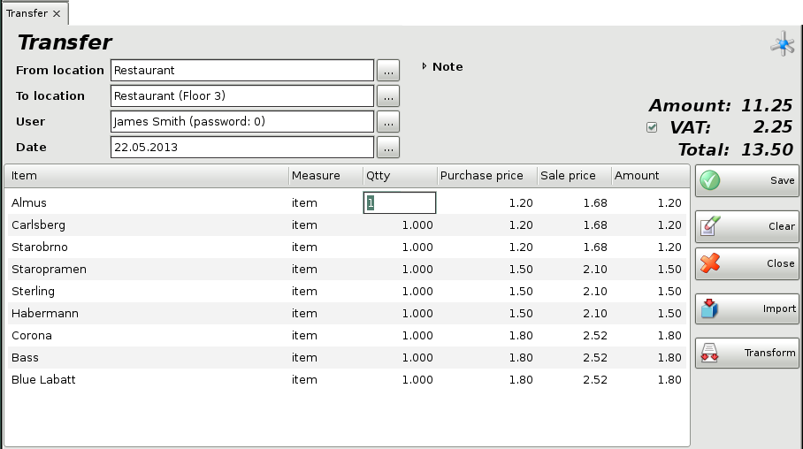
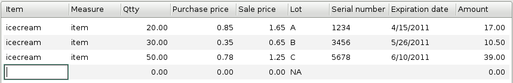

Transfer
The operation reflects transferring of items from one warehouse to another. The quantity of items in the first warehouse will decrease, while the quantity of items in the second one will increase. This does not affect incomes and expenses of the company, since it is an internal circulation.
To fill in the Transfer window (press the F5 key to open it) do the following:
In the From
location field fill in the name or code of the location, from which items
will be taken.
In the To location field fill in the name or
code of the location, to which items will be sent.
To select a location do
one of the following:
- use keyboard shortcut F4 in the locations
list;
- use the Enter key in the locations list;
- double-click
the location in the list;
- type the name of the location in the text
field;
- type the code of the location in the text field.
In the User field fill in the name of the
employee, who will perform the transfer.
To select a user do one of the
following:
- use keyboard shortcut F4 in the users list;
- use
the Enter key in the users list;
- double-click the user in the
list;
- type the user�s name in the text field;
- type the user�s code in
the text field.
In the Item field fill in the items that will
be transferred.
To select an item do one of the following:
- use keyboard
shortcut F4 in the items list;
- type the name of the item in the
text field;
- double-click the item in the list;
- type the code of the
item in the text field;
- type the barcode of the item in the text field.
In the Date field fill in the date of the
document.
Select the date in the Calendar window by pressing
the F4 key or by double-clicking in the text field.
You can add a note to the current operation by using Note.

If you wish to select more than one item, open the items list by pressing the F4 key, hold down the Ctrl key and click the desired items. You can select adjacent items by holding down the Shift key and using the arrow keys.
In the Qtty column fill in the number of items being purchased. Press Enter to confirm. The application automatically fills in the Purchase price, Sale price and Amount columns. Use the same method to enter data about each item that will be transferred to the second location. To save the document, press the F9 key. To cancel the operation, press the Esc key.
Through the button Import, you can select the file, which will be imported in the program. This file contains all the items and their parameters for the operation.
Through the button Transform the particular transfer might be transformed in other operation.

If you are working with lots, you may enter a lot number, a serial number, manufactured and expiration dates and location of each lot in the warehouse in the transfer window. Then enter a transfer quantity and press Enter. The application will split the quantity by lots, depending on the method set in operations settings. In case you do not provide lot information, the Lot column is filled in automatically with "NA".

If you are working with Choice item management method, then after entering a sale quantity and pressing Enter, the application will open a window that contain all available lots for the selected item. Select a lot and press Enter or click OK button. Then the lot will fill in the transfer window.

�2006-2015 Microinvest, All rights reserved